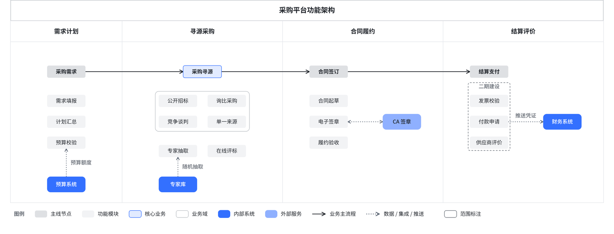

架构视图
stages--init arch
spec · 1-arch.yaml
# 示例 1 · 架构视图：采购平台功能架构
title: 采购平台功能架构
desc: 采购平台按需求计划、寻源采购、合同履约、结算评价四个阶段组织功能模块，并与预算、专家库、CA 签章、财务系统集成。
columns:
- {id: plan, label: 需求计划, lanes: 2}
- {id: source, label: 寻源采购, lanes: 3}
- {id: contract, label: 合同履约, lanes: 3}
- {id: settle, label: 结算评价, lanes: 3}
nodes:
- {label: 采购需求, kind: hub, col: plan, lane: 0.5, row: 0.6}
- {label: 采购寻源, kind: hub, col: source, lane: 1, row: 0.6, core: true}
- {label: 合同签订, kind: hub, col: contract, lane: 0.3, row: 0.6}
- {label: 结算支付, kind: hub, col: settle, lane: 0.3, row: 0.6}
- {label: 预算系统, kind: system, owner: internal, col: plan, lane: 0.5, row: 6}
- {label: 专家库, kind: system, owner: internal, col: source, lane: 0.5, row: 6}
- {label: CA 签章, kind: system, owner: external, col: contract, lane: 1.8, row: 3}
- {label: 财务系统, kind: system, owner: internal, col: settle, lane: 1.8, row: 3}
groups:
- {id: plan_d, col: plan, lane: 0.5, row: 2, items: [需求填报, 计划汇总, 预算校验]}
- {id: methods, frame: true, col: source, lane: 0.5, row: 2, grid: 2, items: [公开招标, 询比采购, 竞争谈判, 单一来源]}
- {id: source_d, col: source, lane: 0.5, row: 4.4, grid: 2, items: [专家抽取, 在线评标]}
- {id: contract_d, col: contract, lane: 0.3, row: 2, items: [合同起草, 电子签章, 履约验收]}
- {id: settle_d, col: settle, lane: 0.3, row: 2, items: [发票校验, 付款申请, 供应商评价]}
edges:
- {from: 采购需求, to: 采购寻源, kind: flow}
- {from: 采购寻源, to: 合同签订, kind: flow}
- {from: 合同签订, to: 结算支付, kind: flow}
- {from: 预算系统, to: 预算校验, kind: data, label: 预算额度}
- {from: 专家库, to: 专家抽取, kind: data, label: 随机抽取}
- {from: CA 签章, to: 电子签章, kind: bidir}
- {from: 付款申请, to: 财务系统, kind: data, label: 推送凭证}
overlays:
- {kind: scope, label: 二期建设, targets: [settle_d], title_pos: top}